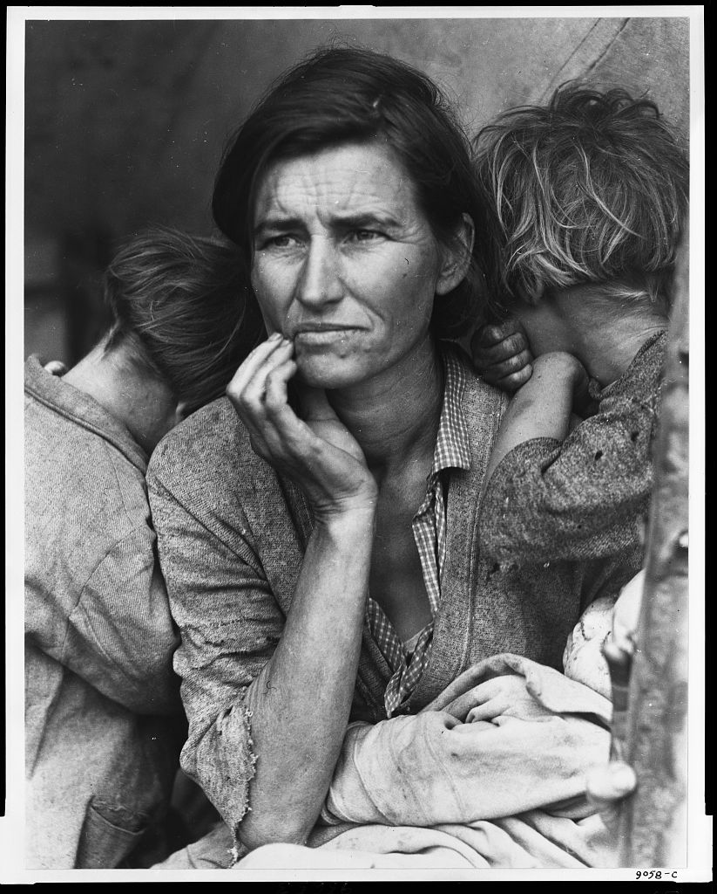
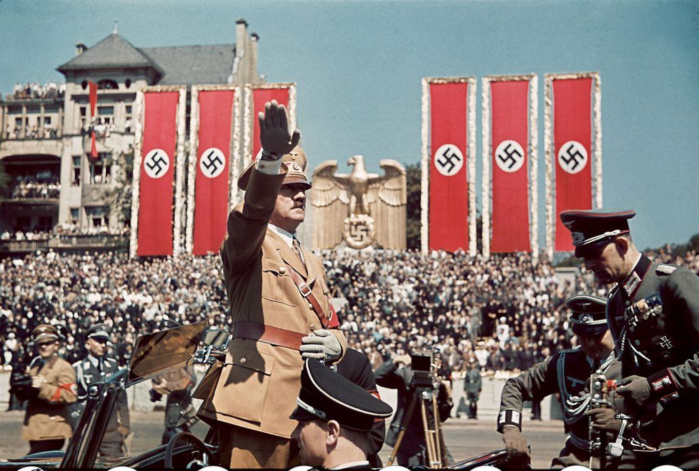
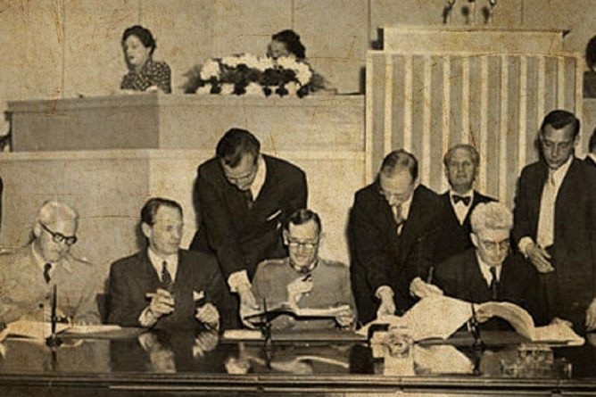
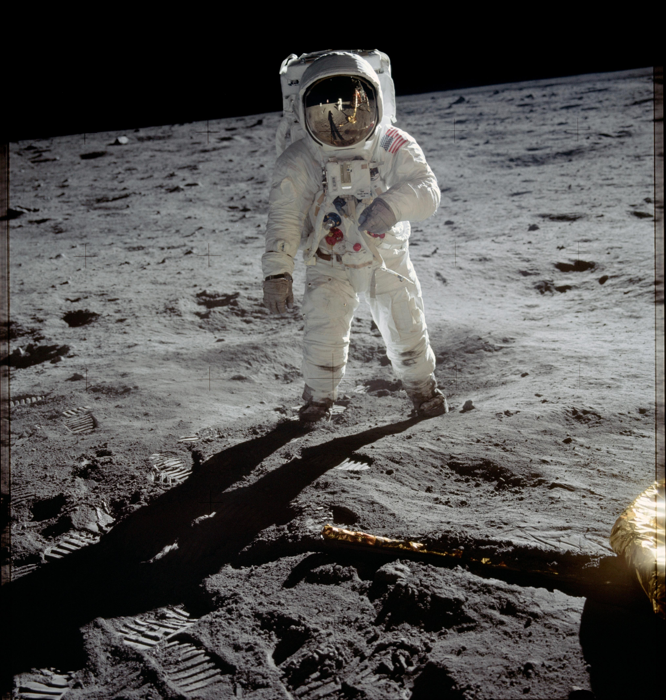

1914–1918
1914–1918
Primera Guerra Mundial
El primer conflicto global; introdujo la guerra industrial y transformó el equilibrio político de Europa.
El siglo XX fue un período de transformación sin precedentes, marcado por avances tecnológicos, conflictos globales y profundos cambios sociales y políticos: desde el estallido de las dos guerras mundiales hasta el auge de la Guerra Fría y la globalización. Estuvo definido por la innovación, la destrucción y la búsqueda constante de nuevos modelos de sociedad.
Seis momentos que transformaron la política, la sociedad y la relación entre los países.
El primer conflicto global; introdujo la guerra industrial y transformó el equilibrio político de Europa.

1929El colapso de la bolsa de Nueva York desató una crisis económica mundial durante los años treinta.

1939–1945El conflicto más devastador de la historia; aceleró avances como el radar, la aviación y la producción de penicilina.

1949Los Convenios de Ginebra fijaron reglas para proteger a civiles, heridos y prisioneros durante los conflictos armados.

1969La misión Apolo 11 llevó a los primeros seres humanos a la superficie lunar y marcó un hito científico.
El comercio, el transporte y la información conectaron al mundo como nunca; Internet aceleró este proceso.
Toca una tarjeta para ver por qué fue importante.
Hermanos Wright. Revolucionó el transporte: viajar entre continentes pasó de semanas a horas. Su primer vuelo motorizado controlado duró unos 12 segundos.
Alexander Fleming. Su descubrimiento abrió el camino a los antibióticos modernos. Muchas infecciones bacterianas dejaron de ser mortales y los tratamientos médicos se volvieron más seguros.
John Bardeen, Walter Brattain y William Shockley. Más pequeño y eficiente que las válvulas electrónicas, permitió crear dispositivos compactos y es una pieza fundamental de los chips actuales.
James Watson y Francis Crick, con aportes esenciales de Rosalind Franklin y Maurice Wilkins. El modelo de doble hélice ayudó a explicar cómo se transmite la información genética e impulsó la biología molecular y la biotecnología.
ARPANET, proyecto impulsado por el Departamento de Defensa de EE. UU. Conectó computadoras para compartir información. La World Wide Web, creada por Tim Berners-Lee, llegó entre 1989 y 1991.
Desarrollo colectivo de miles de científicos e ingenieros. Desde el Sputnik hasta el Apolo 11, la tecnología espacial abrió posibilidades para las comunicaciones satelitales, el GPS, el pronóstico del clima y la observación de la Tierra.
Fuente: NASA